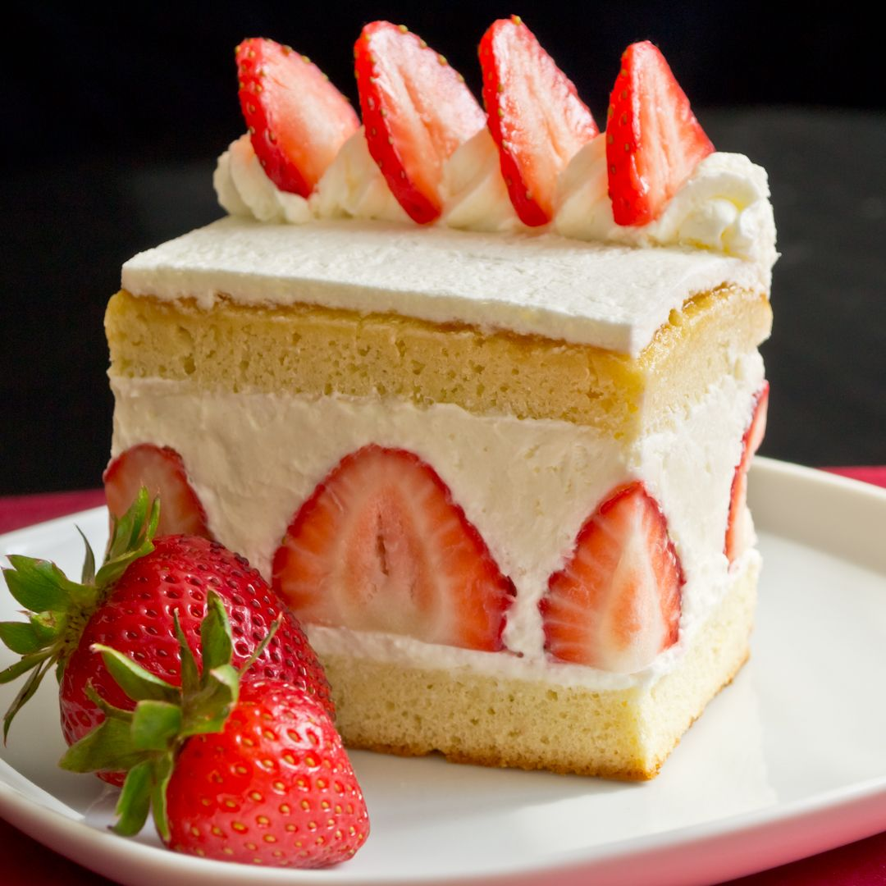

Japanese Strawberry Shortcake

Description
A favorite amongst many cultures, a Japanese Strawberry Shortcake takes
it up a notch with layers of soft and spongy white cake, with fluffy whipped cream
and sliced strawberries in between. A simple dessert (or midnight craving) that satisfies anyone's sweet tooth.
Ingredients:
- 2 egg yolks
- 4 egg whites
- 120g of sugar
- 110g of milk
- 45g of melted butter
- 120g of all purpose flour
- 1tsp baking powder
- 1tsp vanilla extract
- 1tsp lemon zest (optional)
- A pinch of salt
- Strawberries for filling
- Whipped Cream
Directions:
- Whisk egg whites and lemon zest. Once foamy, gradually add sugar into the meringue.
Incorporate a lot of air to make the cake light and fluffy.
Once the meringue has stiff peaks, set it aside.
- In a separate bowl, beat egg yolk and vanilla extract before adding milk and melted butter.
- Once properly mixed, mix in flour until dough has a uniform consistency and color.
- Add a few dollops of the meringue into the mixture before incorporating the rest of the mixture into the meringue.
this will help make the process easier and ensure the air will stay inside the batter.
- Pour the batter into two pans lined with butter and parchment paper, and even it out with a
spatula.
- Bake the cakes in a preheated oven at 320F for around 20-22 minutes.
- Allow cakes to cool for 5 minutes before removing them to a tray to cool completely.
- Coat the cake with a layer of whipped cream evenly before topping it with thinly sliced
strawberries. Again, cover the strawberries with another layer of whipped cream and stack
the second layer of cake over it. Finally, coat the top layer with whipped cream.
- Slice the sides of the cake to reveal the strawberries and layers. Finish the cake by
garnishing it with more strawberries.